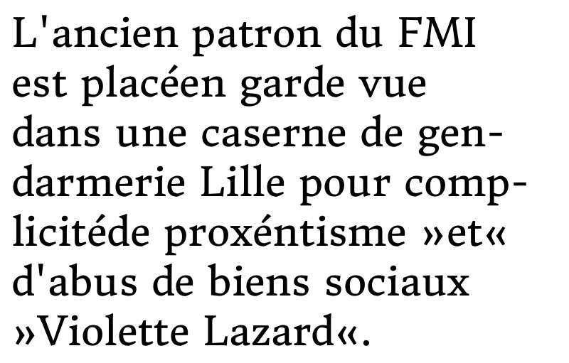

Merriweather Sans is the san serif companion to Merriweather. Like Merriwetaher it comes in 4 weights designed to be especialy usable on screen. Althought it is a sans it has a classic stricture which makes its voice noticeably different from other sanse serif Google Fonts. Merriweather Sans was developed using TTFA to rapidly test design solutions to ensure excellent Windows rendering. Merriweather Sans was designed by Eben Sorkin.
Merriweather Italic
Merriwetaher Italic is the italic companion to Merriweather. It comes in 4 weights carefully tested to work well with Merriwetaher and like Merriweather Sans it renders well on Windows. Merriweather Italic was designed by Eben Sorkin.
Merriweather
The original Merriweather was released before TTFA was available to hint fonts with. The next release of Merriweather (Serif) is optimaized to take full advatage of the hinting ability in TTFA. The new Merriweather also has a much larger glyph set than the original font had. Merriweather was designed by Eben Sorkin.
Gelasio
Gelasio is a typeface designed to take up the same amount of space as Matthew Carter's classic typeface Georgia. To do this it has been made with the same metrics or glyph widths. Gelasio is a "Reale" or Transitional design with many style cues coming from the period immediately after the Romain du Roi type was introduced. Despite sharing metrics the texture and feeling of the two faces are different. Georgia is warmer and friendlier while Gelasio is cooler and more formal. Gelasio was designed by Eben Sorkin.
Kavoon
Kavoon is a display face based on experiments with brush and ink. Kavoon's expressive features make words vivid and powerfully draw the reader in. Kavoon may be used from medium to large sizes. Kavoon was designed by Viktoriya Grabowska.
Pinyon
Pinyon Script is a romantic round hand script style font. It also sports swashes which are confident and showy. These swashes somehow give the type a feeling suggestive of the American West. Perhaps this is why, despite refinement and aristocratic style; Pinyon Script manages to feel so friendly. Pinyon Script uses a high stroke contrast and is very slanted making it best suited for use at larger sizes. Pinton Script was designed by Nicole Fally
Armata
Armata is a low contrast sans serif text face. In Aramata offers the familiar aesthetic steadiness and strength we usually want from a sans design. Armata also offers with innovative and delicate gestures that serve to give it a distinct voice. Armata can be used in a wide range of sizes. This site is set in Armata. Armata was designed by Viktoriya Grabowska
Courgette
Courgette is a brushy medium to low contrast italic script. This kind of style traditionally used for display and unsuprisingly Courgette works well in display. However Courgette's is more versitile than that. Its carefully made forms mean that it also works well in smaller sizes and even in massed text. The Sorkin Type Logo is composed from glyphs in Courgette. Courgette was designed by Karolina Lach
Fruktur
Fruktur appears to be a playful and powerful black letter type at first glance. However it's construction is closer to that of an upright italic. Fruktur offers some of the feeling of a black letter but with higher legibility and greater utility than is typical of black letter type. Fruktur is also quite warm in feeling. It will be most useful from medium to large sizes. Fructur was designed by Viktoriya Grabowska

Donegal
Donegal is a text typeface designed to be highly legible and comfortable when reading in web browsers. Donegal's personality is strong enough to make it distictive even small sizes. Of course this becomes even more apparent in display sizes. Donegal uses the cut interior curve associated with W.A. Dwiggins. This feature is one of many that contribute to Donegal's distinctive and pleasing character. It also renders very well in Windows. Donegal was designed by Gary Lonergan